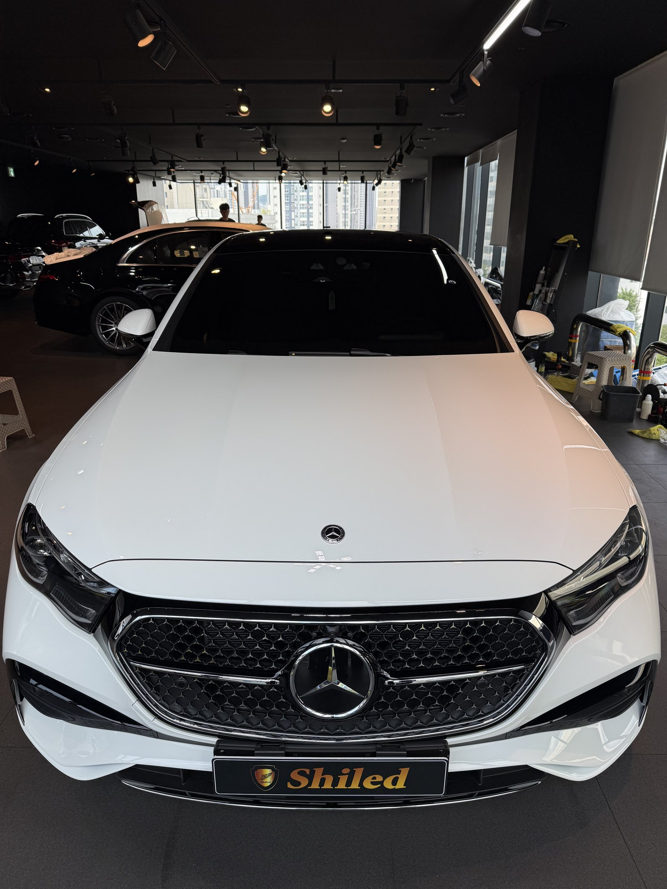
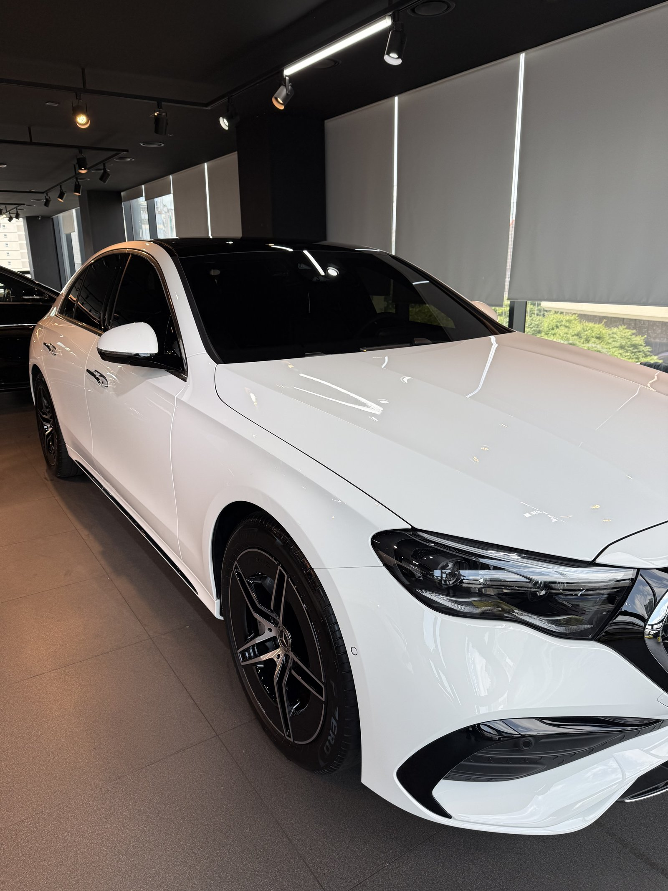
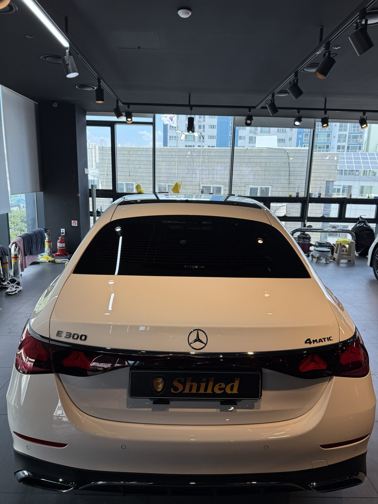
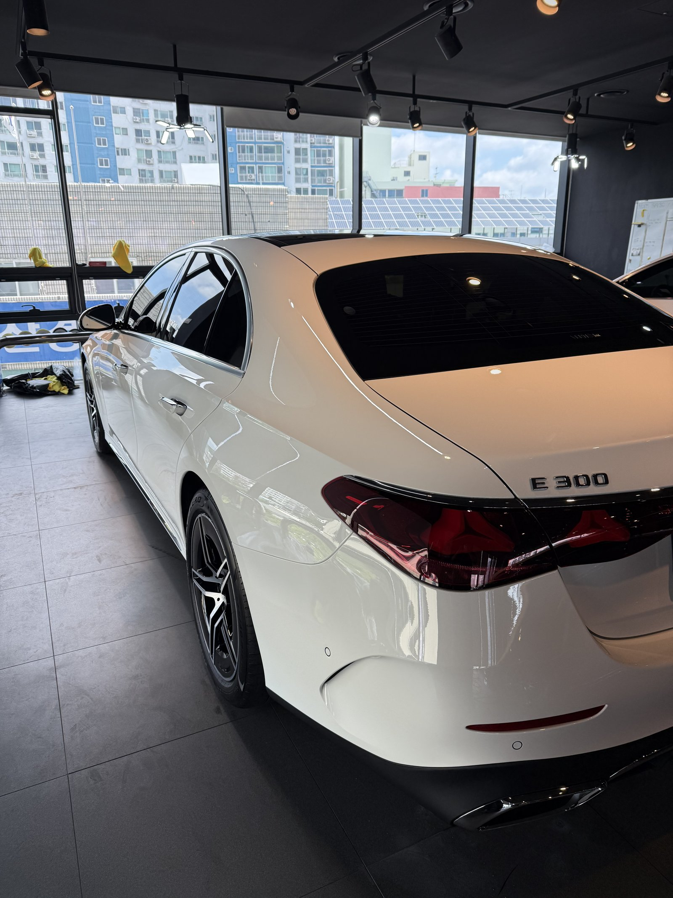
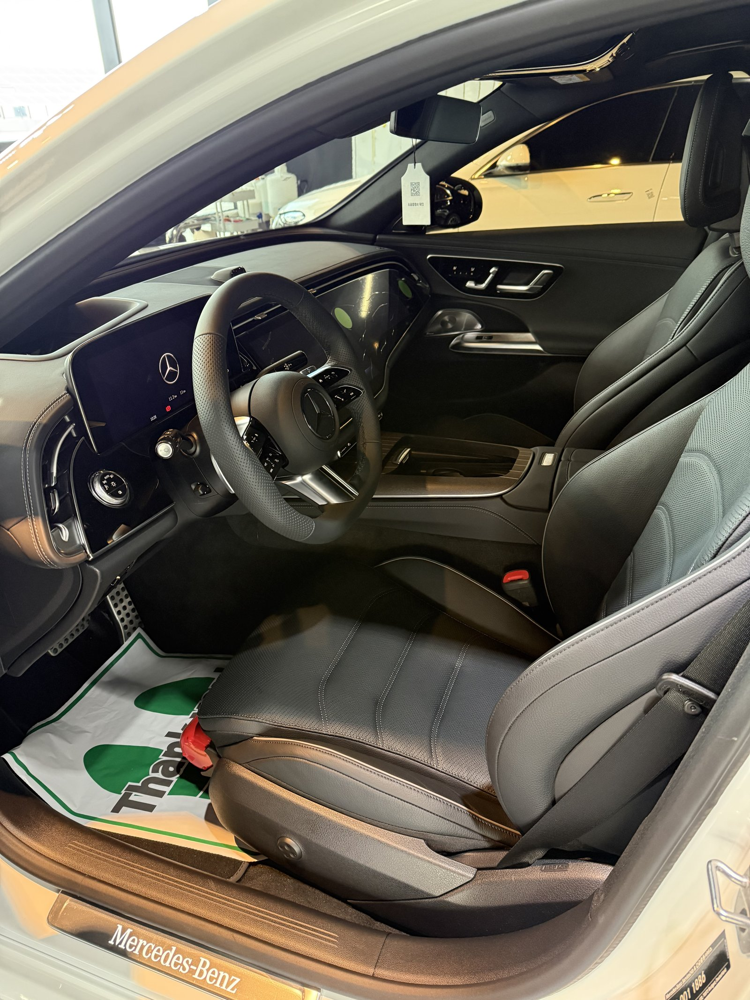
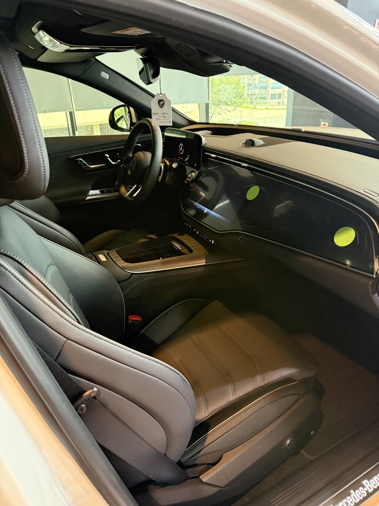
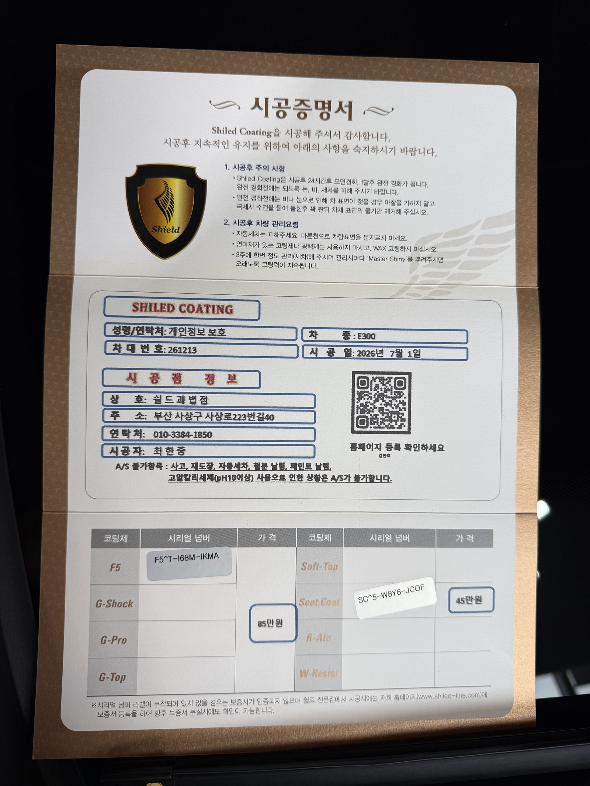

벤츠 E300 화이트입니다. 아직 출고 전, 새 차입니다.
부산 벤츠 유리막코팅으로 이 차는 F5 유리막코팅에 시트코팅까지 함께 진행했습니다.

부산 벤츠 유리막코팅, 왜 출고 전에 해야 하나
도장면이 가장 깨끗한 시점은 출고 직후입니다.
운행과 세차가 시작되면 미세 잔기스와 오염이 쌓이기 시작합니다. 그 전, 신차 상태 그대로일 때 코팅막을 입혀두는 것이 부산 벤츠 유리막코팅의 핵심입니다. 쉴드광택은 이 시점을 놓치지 않고 출고 전 신차 시공을 맡아 진행합니다.

시트코팅은 왜 유리막코팅과 같이 하나
외부만 보호하면 실내 시트는 그대로 오염에 노출됩니다.
시트코팅을 함께 올리면 음료 자국이나 오염이 시트 표면에 스며들기 전에 닦아낼 수 있습니다. 신차 실내를 처음 그대로 지키고 싶다면 외부 유리막코팅과 시트코팅을 같이 진행하는 것을 권합니다.

기술자의 팁
신차라도 운송·보관 중 묻은 미세 오염이 있습니다. 디테일링 세차와 탈지로 표면을 정리한 뒤에 F5를 올려야 코팅이 제대로 밀착합니다.

E300에는 어떤 코팅이 어울리나
이 차는 F5로 진행했습니다.
F5는 색감 깊이를 끌어올려 글로시함을 극대화하는 코팅입니다. 화이트 색상에서도 표면 광이 또렷하게 살아나, 신차의 깨끗한 인상을 한층 강조해 줍니다. 코팅제는 대표가 화학공학 전공으로 직접 개발·제조한 제품입니다.


시공증명서를 함께 드립니다
모든 시공 차량에 시공증명서를 드립니다.
차종·시공일·코팅제 시리얼 번호가 적혀 있고, 홈페이지에 등록해 보증을 받으실 수 있습니다. 이 차는 F5와 시트코팅으로 함께 기록돼 있습니다.

차종·시공일·코팅제 시리얼이 기재된 시공증명서
자주 묻는 질문
Q. 부산 벤츠 유리막코팅, 왜 출고 전에 해야 하나요?
A. 도장면이 가장 깨끗한 시점이 출고 직후이기 때문입니다. 운행·세차로 잔기스와 오염이 쌓이기 전, 신차 상태 그대로일 때 코팅막을 입혀야 컨디션을 오래 지킵니다.
Q. 시트코팅은 왜 유리막코팅과 같이 하나요?
A. 외부만 보호하면 실내 시트는 그대로 오염에 노출됩니다. 시트코팅을 함께 올리면 오염이 시트에 스며들기 전에 닦아낼 수 있어 실내 컨디션도 지킬 수 있습니다.
Q. E300에는 어떤 코팅이 어울리나요?
A. 이 차는 F5로 진행했습니다. 색감 깊이를 끌어올려 글로시함을 극대화하는 코팅으로, 화이트 색상에서도 표면 광이 또렷하게 살아납니다.
Q. 쉴드광택 위치와 예약은 어떻게 하나요?
A. 부산 남구 유엔로220 1F 쉴드광택입니다. 예약·상담은 010-3384-1850, 대표 최한중이 직접 상담하고 책임 시공합니다.
새 차일수록 시작점이 다릅니다. 가장 깨끗할 때 입혀두십시오.
제품을 직접 만드는 사람이 직접 시공합니다.
부산에서 벤츠 신차코팅을 고민 중이시면 편하게 연락 주십시오.
어떤 차를 타냐보다 어떻게 타냐가 중요합니다~!
📞 010-3384-1850 견적 문의쉴드광택 · 부산 남구 유엔로220 1F · 대표 최한중